Haru's Playlist 01을 올린 순서 그대로 정리했어요.
다음 앨범(02~)도 이 순서대로 따라 하면 돼요.
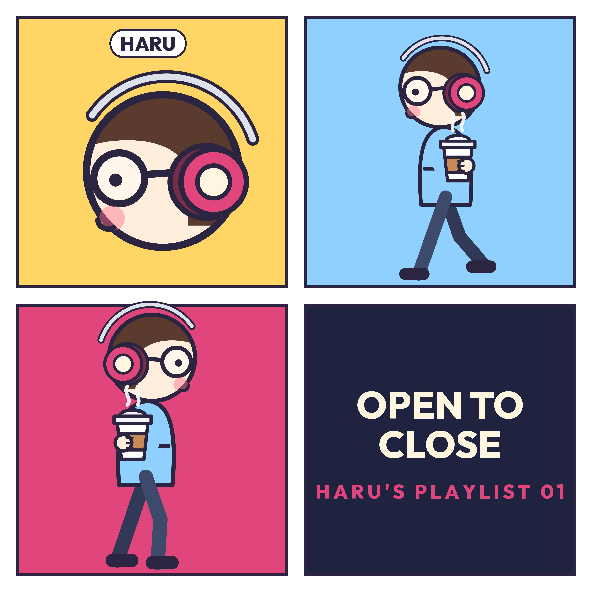
| 준비물 | 내용 |
|---|---|
| 앨범 커버 | 3000×3000 JPG. 매번 다른 디자인, 하루(Haru) 이름을 그림 속에 넣어요. 글자는 앨범 이름과 똑같이. |
| 곡 파일 | WAV 20곡 (16비트 44.1kHz 이상). 01~04는 MP3를 WAV로 바꿔서 쓰고, 05부터는 Suno에서 WAV를 함께 받아요. |
| 가사 | 곡마다 txt. [Verse], [Chorus] 같은 구간 이름은 빼고, 줄 끝 쉼표·마침표 없이, 줄 첫 글자는 대문자. |
| 앨범 이름 | Haru's Playlist 0X (예: Haru's Playlist 01) |
| 아티스트 이름 | Open to Close |
| 곡 순서 | 유튜브 영상 순서 그대로 (파일 번호 = 트랙 번호) |
| 발매일 | 금요일. 등록은 최소 2~3주 전(연말엔 더 일찍). |
playlists/vol0X/album/ 폴더에 커버, 가사, 등록 정보(release_info.txt)를 모아 둬요.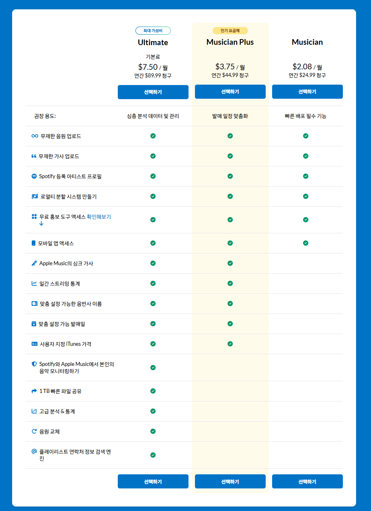
Ultimate($89.99)의 음원 교체, 고급 통계는 지금은 필요 없어요.
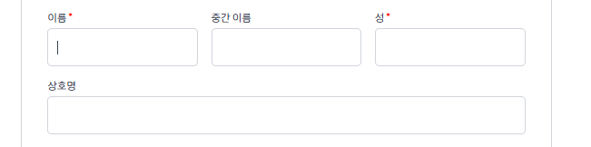
| 항목 | 입력 |
|---|---|
| 이름 | 이름만 영어로, 여권과 같게 (예: Gildong) |
| 중간 이름 | 비워 둬요 |
| 성 | 성만 영어로 (예: Hong) |
| 상호명 | 사업자 등록이 없으면 비워 둬요 (Open to Close는 여기가 아니라 아티스트 이름 칸에) |
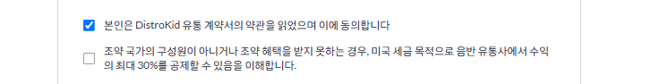
두 개 모두 체크해요. 두 번째(최대 30% 공제)는 "이런 경우가 있다는 걸 이해했다"는 확인일 뿐이에요. 나중에 세금 정보(W-8BEN)를 내면 한국 기준으로 줄어들어요.
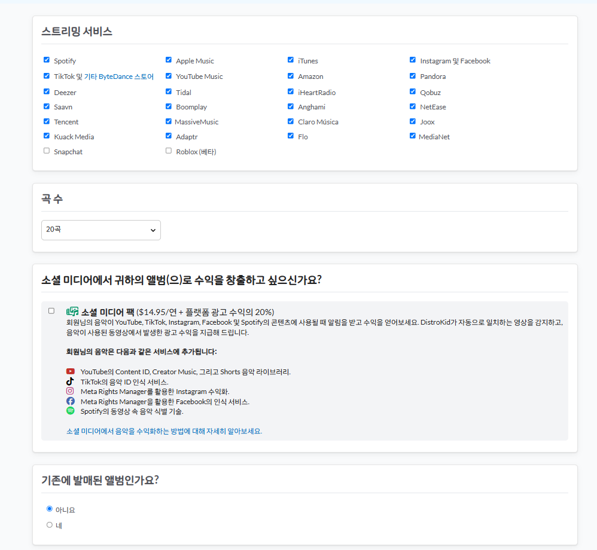
| 항목 | 입력 |
|---|---|
| 스트리밍 서비스 | 체크된 그대로 (Snapchat, Roblox는 안 해도 돼요) |
| 곡 수 | 20곡 |
| 소셜 미디어 팩 | ❌ 체크하지 않아요 |
| 기존에 발매된 앨범인가요? | 아니요 |
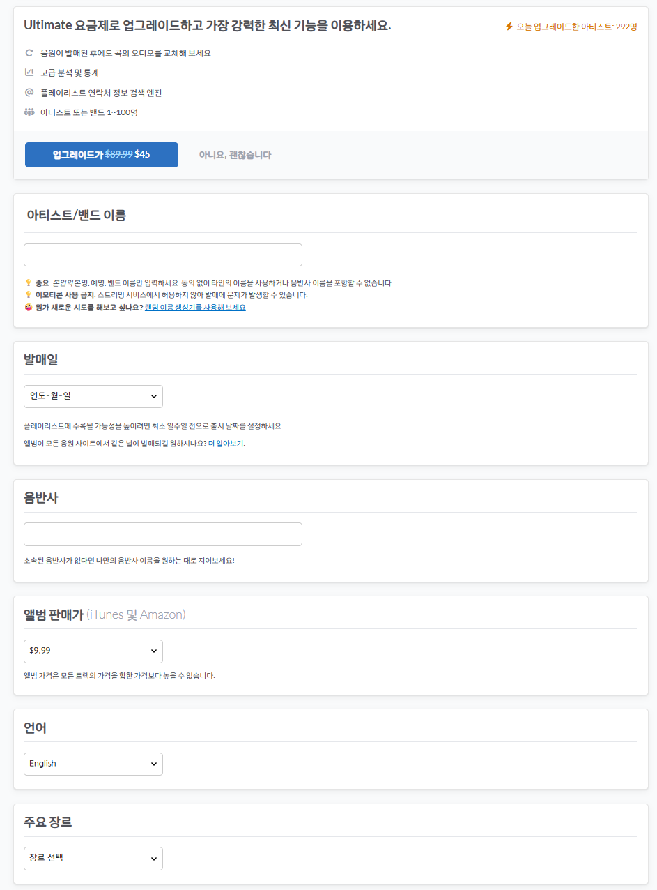
| 항목 | 입력 |
|---|---|
| Ultimate 업그레이드 | "아니요, 괜찮습니다" |
| 아티스트/밴드 이름 | Open to Close |
| 발매일 | 금요일 날짜 (01은 2026-12-11) |
| 음반사 | Open to Close (비우면 DistroKid.com으로 나가요) |
| 앨범 판매가 | $9.99 그대로 |
| 언어 | English |
| 주요 장르 / 보조 장르 | Pop / 비워 둠 |
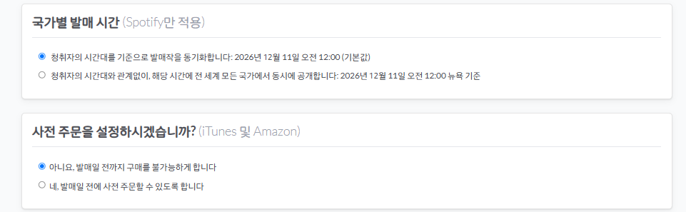
| 항목 | 입력 |
|---|---|
| 국가별 발매 시간 | 첫 번째(기본값): 청취자 시간대 기준 오전 12:00 → 나라마다 금요일 0시에 열려요 |
| 사전 주문 | 아니요 |
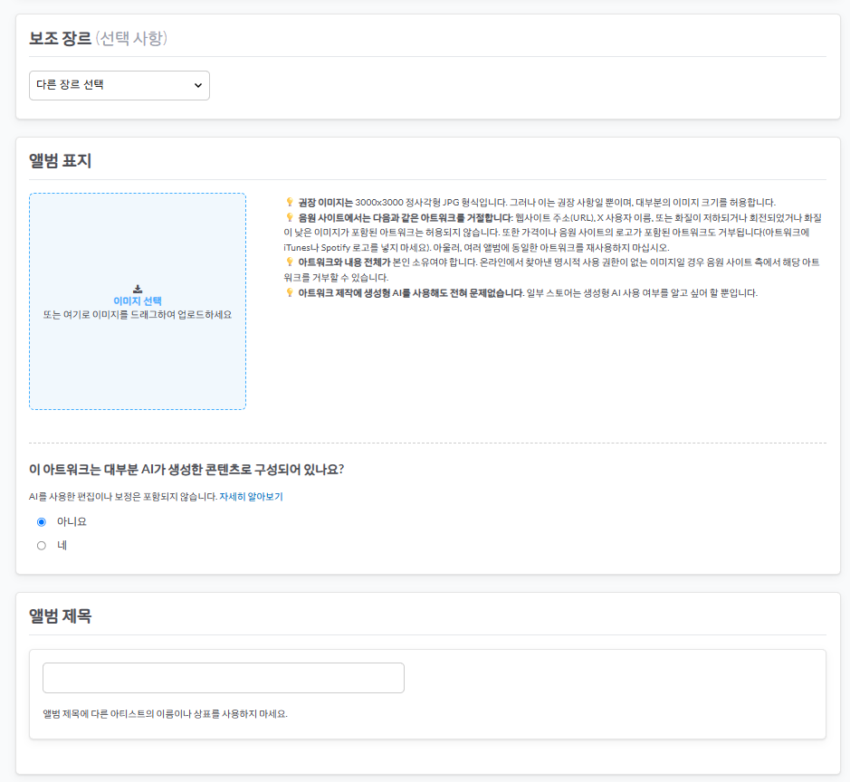
| 항목 | 입력 |
|---|---|
| 앨범 표지 | 커버 JPG 업로드 |
| 이 아트워크는 대부분 AI가 생성했나요? | 네 (AI가 그린 그림이면 네, 사진 보정에만 썼으면 아니요) |
| 앨범 제목 | Haru's Playlist 0X |
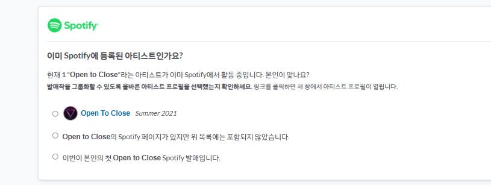
스포티파이에서 같은 이름이 두 개 검색되니, 유튜브 설명란에 우리 링크를 직접 걸어 둬요.
곡 제목과 오디오 파일만 곡마다 바뀌고, 나머지는 20곡 모두 같아요.
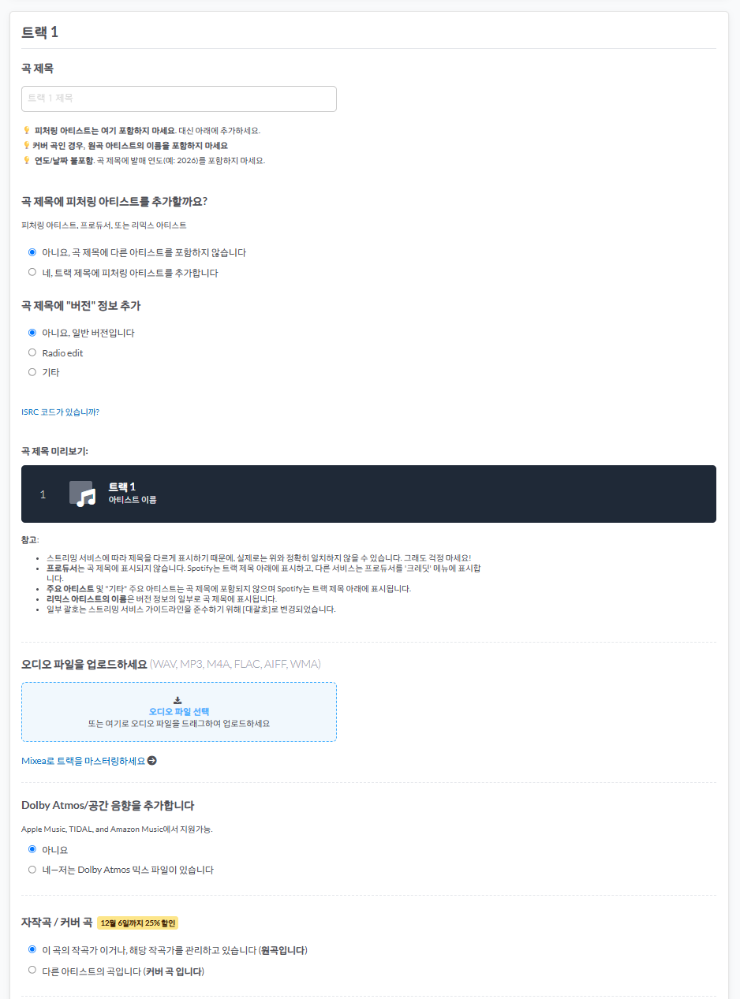
| 항목 | 입력 |
|---|---|
| 곡 제목 | 제목만 (번호, 곡 길이, 연도 넣지 않기). 예: Good Side of the Street |
| 피처링 아티스트 | 아니요 |
| 버전 정보 | 아니요, 일반 버전 |
| ISRC | 비워 둠 (자동 생성) |
| 오디오 파일 | 같은 번호의 WAV |
| Dolby Atmos | 아니요 |
| 자작곡 / 커버 곡 | 원곡입니다 |
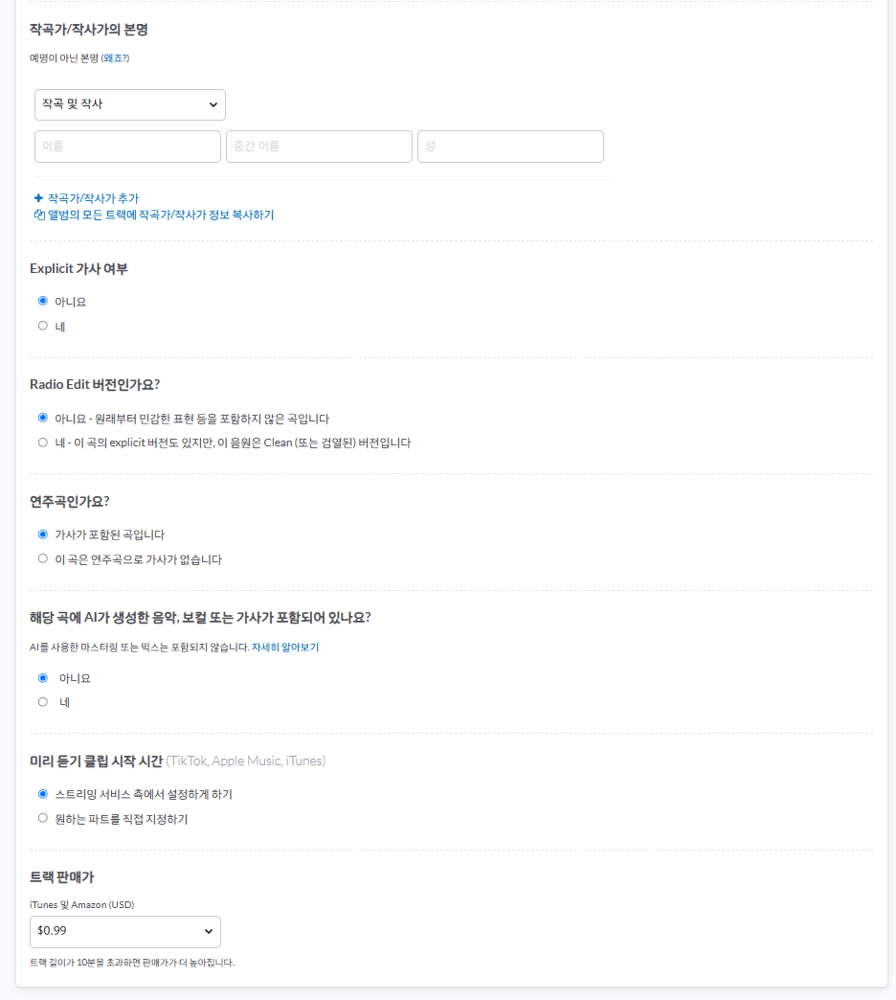
| 항목 | 입력 |
|---|---|
| 작곡가/작사가의 본명 | "작곡 및 작사" + 본인 실명(영어) → "앨범의 모든 트랙에 복사하기" |
| Explicit / Radio Edit | 아니요 / 아니요 |
| 연주곡인가요? | 가사가 포함된 곡입니다 |
| AI 생성 음악·보컬·가사 | 네 |
| 미리 듣기 시작 시간 | 스트리밍 서비스 측에서 설정 |
| 트랙 판매가 | $0.99 그대로 |
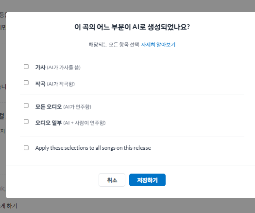
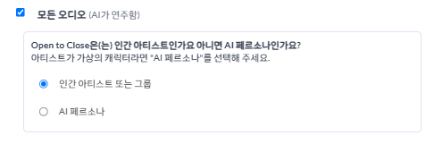
| 항목 | 입력 |
|---|---|
| 가사 / 작곡 / 모든 오디오 | ✅ ✅ ✅ |
| 오디오 일부 | 체크 안 함 |
| Apply these selections to all songs | ✅ (20곡에 한 번에 적용) |
| 인간 아티스트인가요, AI 페르소나인가요? | 인간 아티스트 또는 그룹 (Open to Close는 사람이 운영하는 이름, 하루(Haru)는 마스코트) |
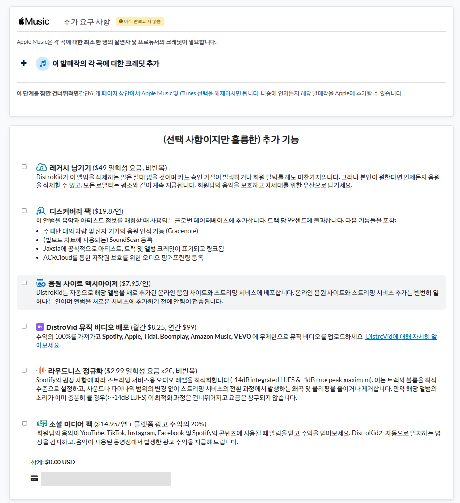
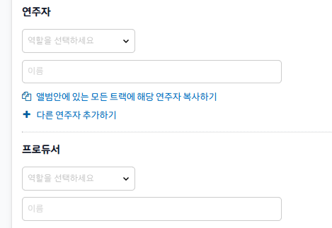
| 칸 | 입력 |
|---|---|
| 연주자 | 역할 노래 & 보컬 / 이름 Open to Close → "모든 트랙에 복사하기" |
| 프로듀서 | 역할 총괄 프로듀서 / 이름 본인 실명(영어) → 모든 트랙에 복사 |
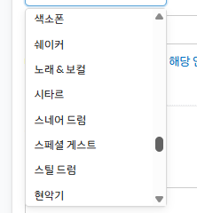
| 기능 | 선택 |
|---|---|
| 레거시 남기기 ($49) | 안 함. 앨범이 쌓이면 나중에 생각 |
| 디스커버리 팩 | 안 함 |
| 음원 사이트 맥시마이저 | 안 함 |
| DistroVid | 안 함 (유튜브는 직접 올려요) |
| 라우드니스 정규화 | 안 함 (Suno 곡은 이미 충분히 크고, 잡음 위험) |
| 소셜 미디어 팩 | ❌ 절대 안 함 |
합계가 $0.00인지 확인해요.
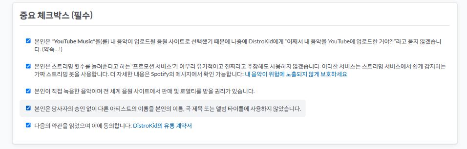
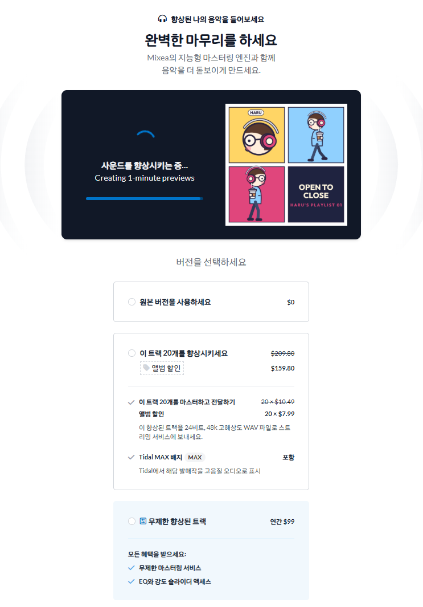
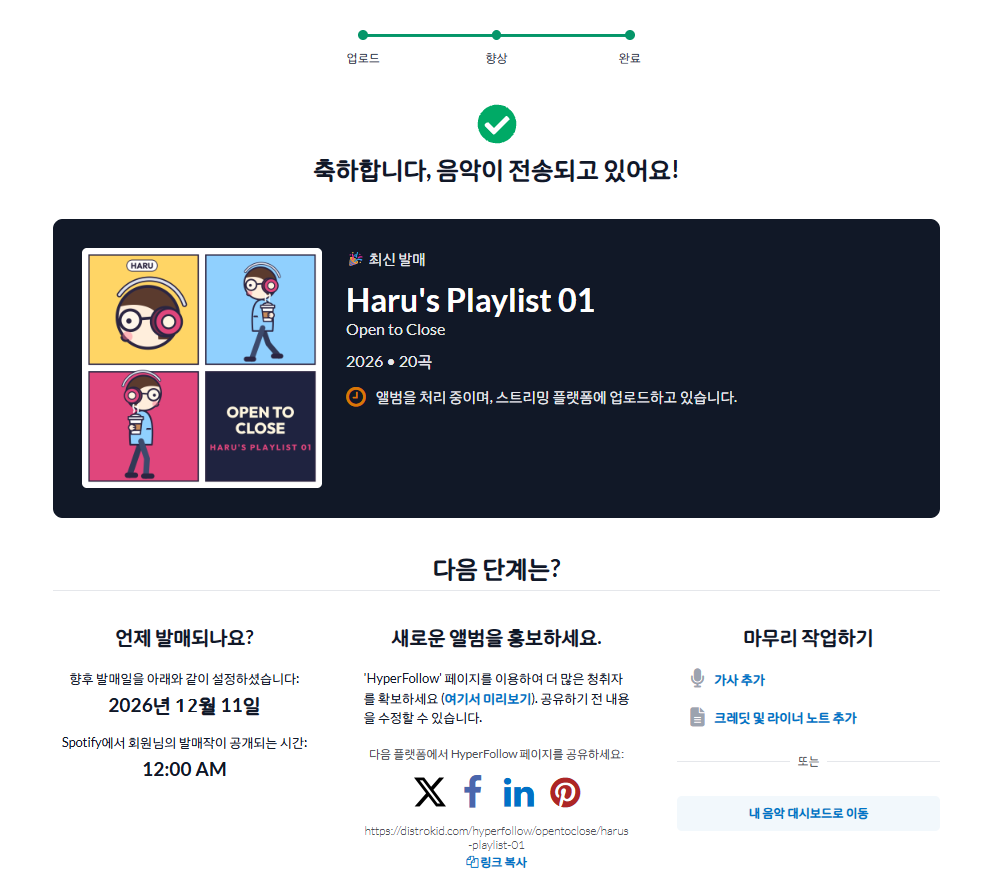
https://distrokid.com/hyperfollow/opentoclose/harus-playlist-01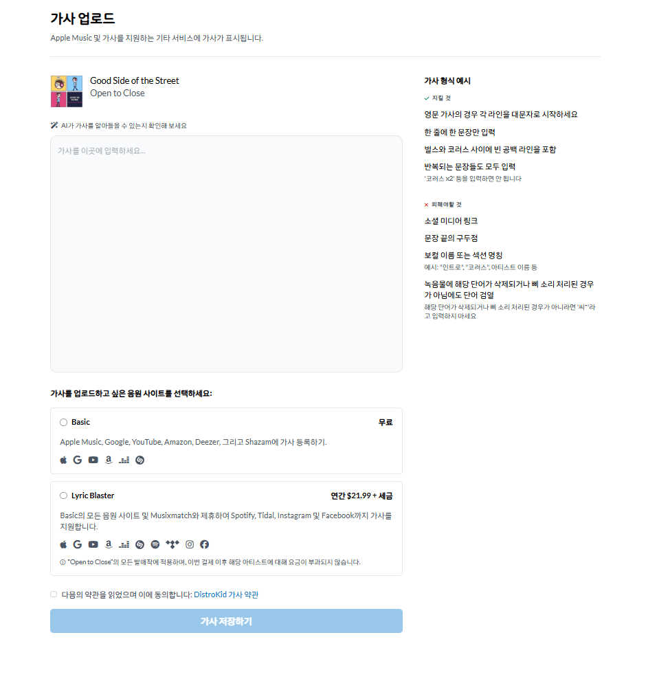
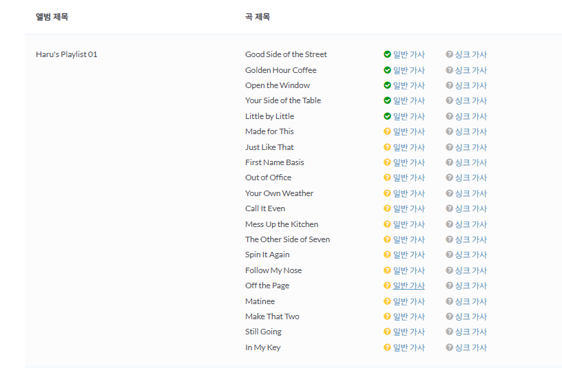
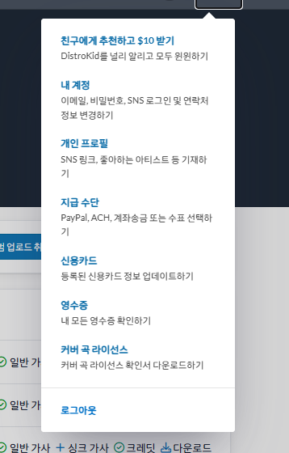
| 메뉴 | 할 일 |
|---|---|
| 지급 수단 | 첫 출금 때 정해요. 수익은 Bank 탭에 쌓여요. 페이팔 추천(영어 실명 일치). 이때 세금 정보(W-8BEN)도 함께 내요. |
| 개인 프로필 | 선택. 아래처럼 채워요. |
| 나머지 | 친구 추천·신용카드·영수증·커버 곡 라이선스는 그대로 |
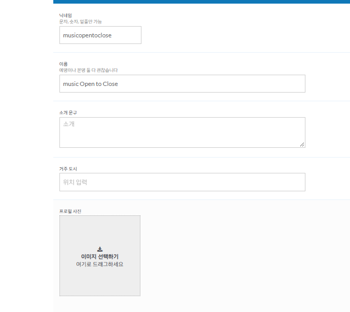
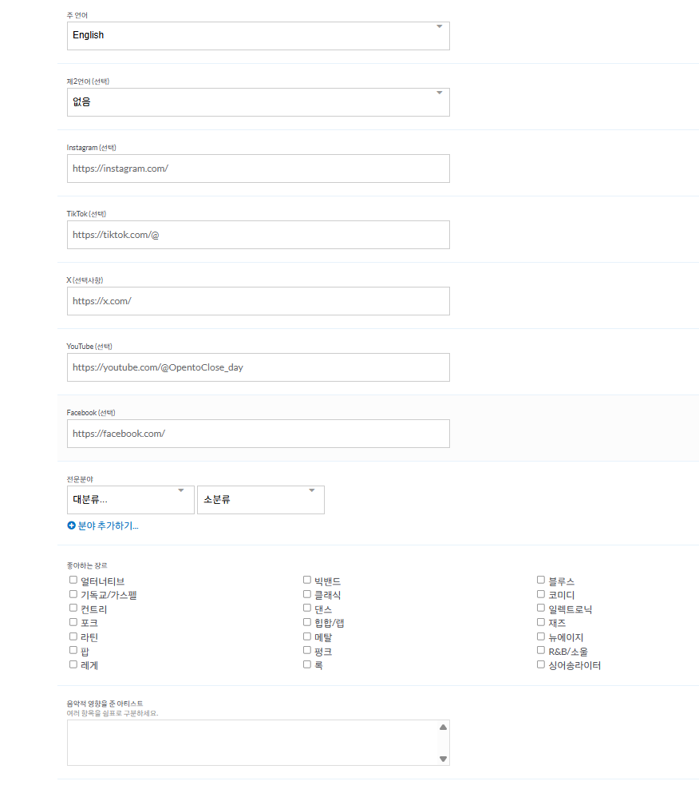
| 항목 | 입력 |
|---|---|
| 이름 | Open to Close |
| 소개 문구 | Music for your day, from open to close 🎧 / Every playlist is a new trip with Haru (하루). / Playlists on YouTube: youtube.com/@OpentoClose_day |
| 거주 도시 | 비워 둠 |
| 프로필 사진 | 유튜브 채널 프로필과 같은 이미지 (branding/profile_800.png) |
| SNS | YouTube만 (https://youtube.com/@OpentoClose_day), 없는 계정 칸은 비움 |
| 좋아하는 장르 | 팝, R&B/소울, 댄스 |
| 영향을 준 아티스트 | 비워 둠 |
| 언제 | 할 일 |
|---|---|
| 스포티파이 등록 메일이 오면 | Spotify for Artists에서 프로필 등록 + 신곡 추천 1곡 신청 (발매 7일 전까지, 01은 12/4) |
| 발매일 | 유튜브 설명란·고정 댓글에 HyperFollow 링크 |
| 발매 후 | Musixmatch에 가사 등록 (스포티파이 가사) |
| 첫 출금 때 | 지급 수단 + 세금 정보(W-8BEN) |